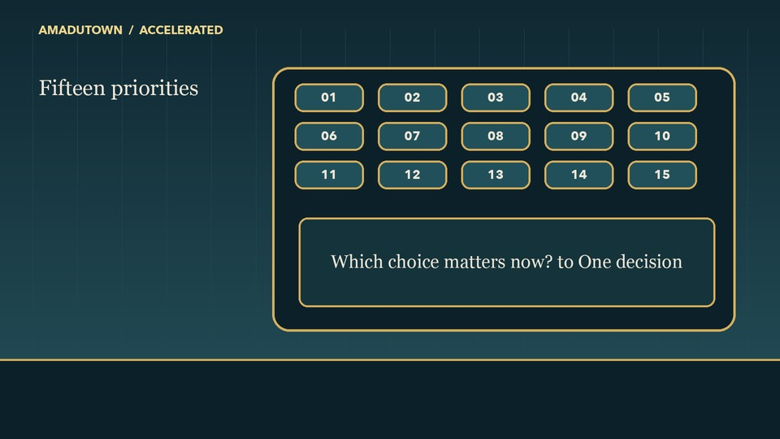

L02-01 · Fifteen priorities
Review-only illustration specimen. The proposed frame keeps the approved navy, teal, and gold vocabulary and shows a crowded synthetic planning board before the decision. It does not replace a learner video. Return to all scenes.

Current clean-shell frameAMADUTOWN / ACCELERATED
Fifteen
priorities